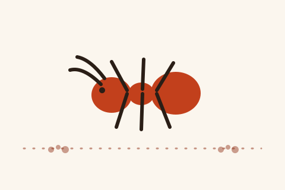

Highland Agricultural Research Stn. Coffee Shop
เพิ่งเก็บมาจากแผนที่ ยังไม่มีรายละเอียดเพิ่มเติม · Just pinned from the map — no other details on record yet.

ยังไม่มีรูปของที่นี่ — มดแดงยืนถือที่ไว้ให้ก่อน · No photo of this place yet — the ant is holding the space
🐜 ที่นี่ไม่มีเว็บของตัวเอง — หน้านี้คือที่บันทึกของมดแดง ใช้อ้างอิงและแชร์ได้เลย · This place keeps no website of its own — so this page is the record. Cite it, share it, link to it. เจ้าของยืนยันข้อมูลได้ฟรีที่นี่เจ้า · Owners: claim and correct it here, free
- หมวด · Category
- ร้านอาหาร-ของกิน · Food & Eats
- แผนที่ · Map
- OpenStreetMap · Google Maps
🐜 ช่วยเติมชื่อไทย และ ชื่ออังกฤษได้ไหมเจ้า · Could you help add Thai name and English name? ขึ้นทันทีเลย · It shows at once.
📷 มีรูปของที่นี่ไหม ส่งมาได้เลย ลงเครดิตชื่อคุณไว้ใต้รูป · Have a photo of this place? Send it — your name goes under it. ส่งรูป · Send a photo
![คิวอาร์โค้ด สแกนแล้วเปิดหน้า Highland Agricultural Research Stn. Coffee Shop บน motdang.net · QR code — scanning it opens the Highland Agricultural Research Stn. Coffee Shop page on motdang.net]()
สแกนแชร์หรือพกไว้หน้าร้านก็ได้ · Scan to share — or print it by the door
ข้อมูลจาก OpenStreetMap · Data from OpenStreetMap · 2026-07-27